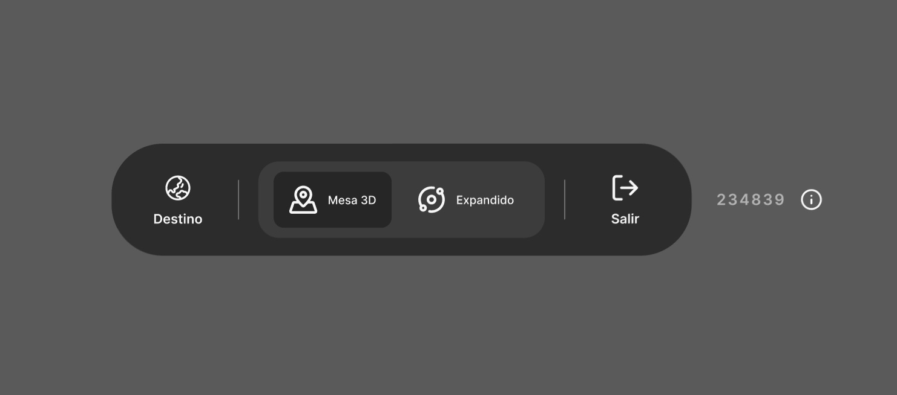
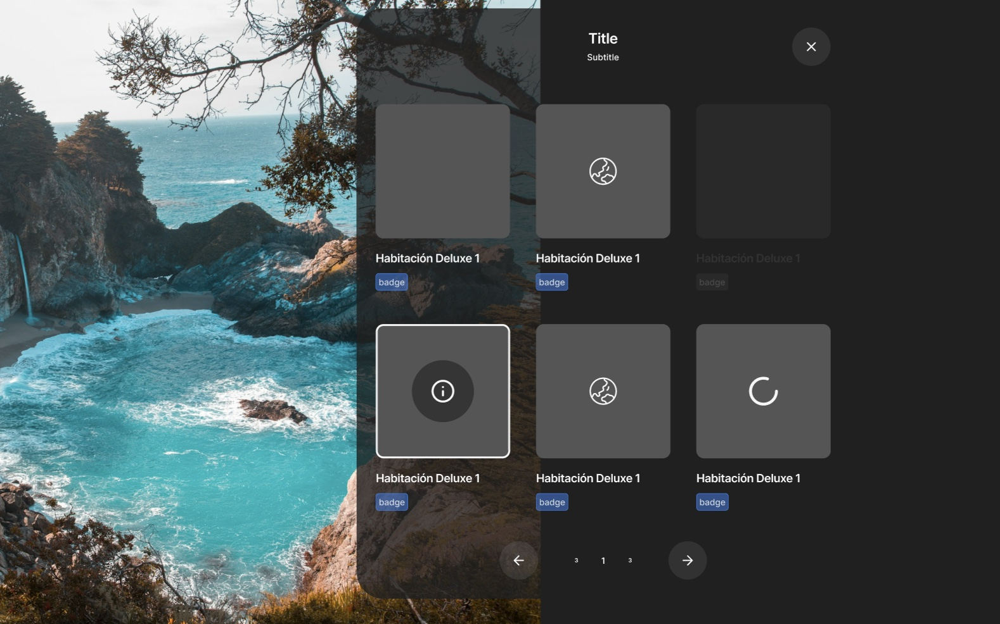

La barrera no era la edad: cómo hicimos más comprensible una experiencia de viaje en realidad virtual
Triportation es una experiencia de realidad virtual creada para descubrir destinos y su oferta turística de forma inmersiva. Al observar su uso en contextos reales, detectamos que la dificultad no dependía únicamente de la edad: muchas personas no encontraban referencias conocidas que les ayudaran a comprender cómo empezar, orientarse y avanzar.
La investigación cambió el enfoque del producto: pasamos de plantear más instrucciones a reorganizar la experiencia alrededor de un punto de entrada claro, interacciones simples y patrones familiares.
01 Contexto
Triportation permitía explorar destinos, hoteles, puntos de interés, restaurantes y cruceros desde un entorno de realidad virtual. Su función no era gestionar reservas, sino ayudar a las agencias de viaje a presentar su oferta de una manera más visual, inmersiva e inspiradora.
La interfaz inicial reunía funcionalidades con distintos niveles de relevancia sin una jerarquía clara. Al entrar en la experiencia, algunas personas no sabían dónde empezar, qué acciones podían realizar ni cómo desplazarse por el entorno.
La interpretación inicial del equipo relacionaba estas dificultades con la edad de los usuarios. Antes de diseñar una solución específica para personas mayores, necesitábamos comprobar qué estaba provocando realmente la desorientación.
02 Decisión que debía tomar el equipo
Debíamos decidir entre dos direcciones:
- Explicar más: incorporar un tutorial más largo dirigido a usuarios de mayor edad.
- Estructurar mejor: investigar las barreras reales y reorganizar la experiencia alrededor de interacciones más reconocibles.
La decisión era relevante porque condicionaba tanto el onboarding como la arquitectura de información del producto.
03 Pregunta de investigación
¿Qué impide que algunas personas comprendan y exploren Triportation con autonomía durante sus primeros minutos en realidad virtual?
Como pregunta secundaria, analizamos si la edad explicaba estas dificultades o si existían factores más relevantes, como la familiaridad tecnológica, la experiencia previa con RV y el reconocimiento de los patrones de interacción.
04 Hipótesis iniciales
- La edad era la principal barrera para utilizar la experiencia.
- Un tutorial más extenso reduciría la mayoría de las dificultades.
- La incomodidad física de la RV era la principal causa de abandono.
- Mostrar todas las funcionalidades desde el inicio ayudaría a comprender el alcance del producto.
05 Metodología y participantes
Realizamos la investigación en dos contextos diferentes: una feria en Sevilla, donde las personas probaban la experiencia dentro de un entorno abierto, y una sesión en la Universidad de Las Palmas de Gran Canaria, en un contexto de prueba más controlado.
Combinamos observación contextual, conversaciones exploratorias y tests de usabilidad moderados. Durante las primeras interacciones observamos:
- Cómo intentaban empezar la experiencia.
- En qué momentos necesitaban ayuda.
- Cómo interpretaban los controles y elementos visuales.
- Qué decisiones les generaban dudas.
- Cómo se orientaban dentro del espacio virtual.
Para analizar los comportamientos, consideramos la familiaridad con la tecnología y la experiencia previa con videojuegos o realidad virtual, en lugar de utilizar únicamente la edad como criterio de segmentación.
06 Evidencia observada
La realidad virtual era un medio nuevo incluso para personas habituadas a utilizar aplicaciones y páginas web. Al entrar en el entorno, muchos participantes no disponían de un modelo mental claro sobre cómo interactuar con él.
La interfaz inicial aumentaba esta dificultad porque presentaba varias funcionalidades simultáneamente, sin señalar cuál debía ser el primer paso.
Los usuarios buscaban referencias conocidas que les permitieran entender dónde se encontraban, qué podían hacer y qué ocurriría después de cada acción.
Las dificultades aparecían también en participantes jóvenes con poca experiencia en videojuegos o RV. Esto indicaba que la edad, por sí sola, no explicaba el comportamiento observado.
07 Patrones e insights
1. La familiaridad era más relevante que la edad
Las dificultades estaban relacionadas principalmente con la experiencia previa y con la capacidad de reconocer las convenciones de interacción, no con una menor capacidad de aprendizaje asociada a la edad.
2. La RV necesitaba puntos de anclaje conocidos
Dentro de un entorno nuevo, las personas buscaban elementos que pudieran relacionar con otros medios: una portada cinematográfica, una navegación similar a una aplicación o una estructura visual reconocible.
3. Explicar más no solucionaba una estructura confusa
El problema no era únicamente la falta de instrucciones. La experiencia mostraba demasiadas posibilidades antes de que el usuario comprendiera cuál era el recorrido principal.
4. Menos acciones aumentaban la sensación de control
Reducir las decisiones visibles y establecer una secuencia clara podía disminuir la carga cognitiva y facilitar que las personas exploraran el producto con mayor autonomía.
08 Implicaciones para producto
La investigación descartó diseñar una experiencia específica para "personas mayores". Esa solución habría partido de una variable demográfica que no explicaba por sí sola las dificultades observadas.
La oportunidad estaba en traducir la realidad virtual a un lenguaje de interacción más familiar: establecer un punto de entrada reconocible, reducir las acciones necesarias y presentar la información de manera progresiva.
También necesitábamos priorizar las funcionalidades que sostenían la propuesta de valor para nuestros clientes, principalmente agencias de viaje: facilitar el descubrimiento de destinos y presentar visualmente su oferta turística.
09 Decisiones tomadas
Destino como punto de entrada
Convertimos la selección del destino en la acción principal. Desde allí, el usuario podía descubrir los diferentes lugares disponibles y acceder a sus contenidos asociados.
Mesa 3D como referencia espacial
Organizamos la navegación alrededor de una mesa tridimensional que funcionaba como punto de anclaje dentro del entorno virtual. Esto permitía reconocer dónde se encontraba el usuario y desplazarse entre destinos mediante interacciones sencillas.

Contenido organizado progresivamente
Hoteles, puntos de interés, restaurantes y cruceros aparecían después de seleccionar un destino, evitando mostrar toda la oferta desde el inicio.

Filtros como función secundaria
Los filtros ayudaban a acotar la exploración, pero no competían visualmente con la acción principal.
Patrones visuales familiares
Incorporamos referencias procedentes del cine, las aplicaciones y la web para reducir la distancia entre una tecnología nueva y modelos de interacción que las personas ya conocían.
El nuevo recorrido quedó reducido a una secuencia comprensible: elegir un destino → explorarlo sobre la mesa 3D → descubrir su oferta turística.
10 Resultado, limitaciones y próximos pasos
La investigación cambió el foco del rediseño: dejamos de intentar explicar una interfaz compleja mediante más instrucciones y empezamos a construir una experiencia más jerarquizada, familiar y orientada al descubrimiento.
El principal impacto fue sustituir una segmentación basada en la edad por decisiones fundamentadas en la familiaridad tecnológica y en el comportamiento observado.
Limitaciones: la investigación se realizó con una muestra exploratoria reducida y en dos contextos específicos. Por ello, los resultados permitían orientar el diseño, pero no generalizarlos a toda la población ni demostrar todavía una mejora cuantitativa.
Próximos pasos: la siguiente fase debería evaluar el nuevo recorrido con una muestra más amplia y medir:
- Finalización de la primera exploración sin ayuda.
- Tiempo hasta seleccionar el primer destino.
- Número de solicitudes de asistencia.
- Errores o acciones no intencionadas.
- Abandono durante los primeros minutos.
Aprendizaje principal: la investigación no demostró que las personas necesitaran más instrucciones. Demostró que una tecnología nueva necesita apoyarse en referencias conocidas para poder ser comprendida.
¿Tu producto asume que la dificultad de uso depende del perfil demográfico de quien lo usa?
Hablemos de cómo segmentar por comportamiento en vez de por edad antes de diseñar una solución.
Hablemos